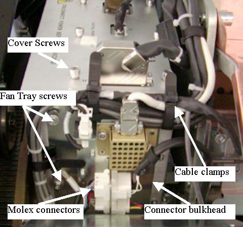

Check on each end of the power supply for cables that may be mounted just out of sight on the ends. Most are secured using reusable cable clamps that are black and shown in Illustration 4. To open the cable clamps pull back on the small tab away from the end of the strap and push the strap back through the clamp.
Starting at the top, remove all of the cables from the power supply top, front side and bottom. For the digital supply, remove all of the cables attached to the back of the Right chassis backplane. For the Analog supply remove all the cables attached to the Center and Left chassis backplane.
There are cables on the end of the Digital power supply that must be removed. The suggested order of removal is: DMB plug, Fan Plug, DHCB plug, Collimator plug. These cables have connectors with tabs that also must be removed from the cable interface plate to remove the supply. To remove the molex connectors from the bulkhead after disconnecting the cable use a small flat screw driver to push down on the tab and pull the molex back to release the top then reach under the molex with the screw driver and push up on the bottom tab while pulling on the connector. It should pop out with both tabs released from the bulkhead. Use the DMB bracket thumb screws to detach it from the supply. Leave the cables attached to the DMB.
The Detector heater wires are small and may break with repeated bending. Use caution with this cable.
Black cable clamps are reusable ties. Do not cut them.
Illustration 4: GDAS-16 Cabling
